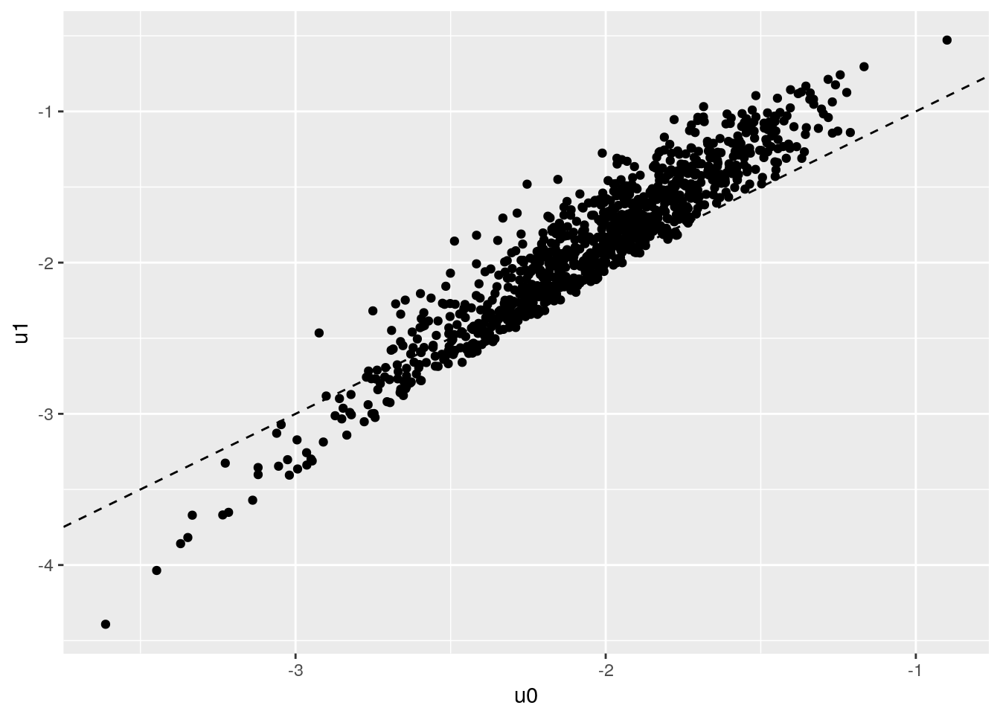

Static Labor Supply
You can find the source code for this file in the class repository. The direct link is here
Let’s start with studying static labor supply. We will consider the decision of the agent under the following rule:
\[ \max_{c,h} \frac{c^{1+\eta}}{1+\eta} - \beta \frac{h^{1+\gamma}}{1+\gamma}\\ \text{s.t. } c = \rho \cdot w\cdot h -r + \mu - \beta_0 \cdot 1[h>0] \\ \] The individual takes his wage \(w\) as given, he chooses hours of work \(h\) and consumption \(c\) subject to a given non labor income \(\mu\) as well as a tax regime defined by \(\rho,r\). \(\beta_0\) is a fixed cost associated with working.
We note already that the non-labor income can control for dynamic labor supply since we can have \(\mu= b_t - (1+r)b_{t+1}\). This is part of a larger maximization problem where the agents choose optimaly \(b_t\) over time. We will get there next time.
Interior solution
The first order conditions give us \(w(wh +r - \mu)^\eta = \beta h^\gamma\). There is no closed-form but we can very quickly find an interior solution by using Newton maximization on the function \(f(x) = w(wh +r - \mu)^\eta - \beta h^\gamma\). We iterate on
\[ x \leftarrow x - f(x)/f'x) \].
# function which updates choice of hours using Newton step
# R here is total unearned income (including taxes when not working and all)
ff.newt <- function(x,w,R,eta,gamma,beta) {
f0 = w*(w*x + R)^eta - beta*x^gamma
f1 = eta*w^2 * (w*x + R)^(eta-1) - gamma * beta *x^(gamma-1)
x = x - f0/f1
x = ifelse(w*x + R<=0, -R/w + 0.0001,x) # make sure we do not step out of bounds for next iteration
x = ifelse(x<0, 0.0001,x)
x
}Simulating data
We are going to simulate a data set where agents will choose participation as well as the number of hours if they decide to work. To do that we will solve for the interior solution under a given tax rate and compare this to the option of no-work.
p = list(eta=-1.5,gamma = 0.8,beta=1,beta0=0.1) # define preferences
tx = list(rho=1,r=0) # define a simple tax
N=1000
simdata = data.table(i=1:N,X=rnorm(N))
simdata[,lw := X + rnorm(N)*0.2]; # add a wage which depends on X
simdata[,mu := exp(0.3*X + rnorm(N)*0.2)]; # add non-labor income that also depends on X
# we then solve for the choice of hours and consumption
simdata[, h := pmax(-mu+tx$r + p$beta0 ,0)/exp(lw)+1] # starting value
# for loop for newton method (30 should be enough, it is fast)
for (i in 1:30) {
simdata[, h := ff.newt(h,tx$rho*exp(lw),mu-tx$r-p$beta0,p$eta,p$gamma,p$beta) ]
}
# attach consumption, value of working
simdata[, c := exp(lw)*h + mu - p$beta0];
simdata[, u1 := c^(1+p$eta)/(1+p$eta) - p$beta * h^(1+p$gamma)/(1+p$gamma) ];At this point we can regress \(\log(w)\) on \(\log(c)\) and \(\log(h)\) and find precisely the parameters of labor supply:
pander(summary(simdata[,lm(lw ~ log(c) + log(h))]))## Warning in summary.lm(simdata[, lm(lw ~ log(c) + log(h))]): essentially
## perfect fit: summary may be unreliable| Estimate | Std. Error | t value | Pr(>|t|) | |
|---|---|---|---|---|
| log(c) | 1.5 | 1.458e-17 | 1.029e+17 | 0 |
| log(h) | 0.8 | 3.726e-17 | 2.147e+16 | 0 |
| (Intercept) | 1.123e-16 | 3.196e-17 | 3.515 | 0.0004595 |
| Observations | Residual Std. Error | \(R^2\) | Adjusted \(R^2\) |
|---|---|---|---|
| 1000 | 2.708e-16 | 1 | 1 |
#pander(summary(simdata[,lm(log(h) ~ log(c) + log(c - h*exp(lw)))]))Adding participation
We simply compute the value of choosing \(h=0\), then take the highest of working and not working.
simdata[,u0:= mu^(1+p$eta)/(1+p$eta)];
simdata[,p1:=u1>u0]
ggplot(simdata,aes(x=u0,y=u1)) + geom_point() + geom_abline(linetype=2)
The regression still works, among each individual who chooses to work, the FOC is still satisfied.
pander(summary(simdata[p1==TRUE,lm(lw ~ log(c) + log(h))]))## Warning in summary.lm(simdata[p1 == TRUE, lm(lw ~ log(c) + log(h))]):
## essentially perfect fit: summary may be unreliable| Estimate | Std. Error | t value | Pr(>|t|) | |
|---|---|---|---|---|
| log(c) | 1.5 | 1.969e-17 | 7.619e+16 | 0 |
| log(h) | 0.8 | 7.128e-17 | 1.122e+16 | 0 |
| (Intercept) | 3.833e-16 | 4.904e-17 | 7.817 | 1.784e-14 |
| Observations | Residual Std. Error | \(R^2\) | Adjusted \(R^2\) |
|---|---|---|---|
| 773 | 2.826e-16 | 1 | 1 |
Heterogeneity in \(\beta\)
Finally we want to add heterogeneity in the \(\beta\) parameter.
simdata[,betai := exp(0.5*X+rnorm(N)*0.1)]
simdata[, h := pmax(-mu+tx$r + p$beta0 ,0)/exp(lw)+1]
for (i in 1:30) {
simdata[, h := ff.newt(h,tx$rho*exp(lw),mu-tx$r-p$beta0,p$eta,p$gamma,betai) ]
}
# attach consumption
simdata[, c := exp(lw)*h + mu - p$beta0];
simdata[, u1 := c^(1+p$eta)/(1+p$eta) - betai * h^(1+p$gamma)/(1+p$gamma) ];
simdata[, u0:= mu^(1+p$eta)/(1+p$eta)];
simdata[,p1:=u1>u0]
# let's check that the FOC holds
sfit = summary(simdata[,lm(lw ~ log(c) + log(h) + log(betai))])## Warning in summary.lm(simdata[, lm(lw ~ log(c) + log(h) + log(betai))]):
## essentially perfect fit: summary may be unreliableexpect_equivalent(sfit$r.squared,1)
expect_equivalent(coef(sfit)["log(c)",1],-p$eta)
expect_equivalent(coef(sfit)["log(h)",1],p$gamma)
sfit = summary(simdata[p1==TRUE,lm(lw ~ log(c) + log(h))])
expect_false(coef(sfit)["log(c)",1]==-p$eta)pander(sfit)| Estimate | Std. Error | t value | Pr(>|t|) | |
|---|---|---|---|---|
| log(c) | 2.123 | 0.02263 | 93.84 | 0 |
| log(h) | 0.2957 | 0.0302 | 9.792 | 1.58e-21 |
| (Intercept) | -0.5621 | 0.01556 | -36.12 | 3.741e-174 |
| Observations | Residual Std. Error | \(R^2\) | Adjusted \(R^2\) |
|---|---|---|---|
| 857 | 0.1564 | 0.966 | 0.9659 |
Short Panel version
# Short Panel version
Q1: Take the simulated data from the model with heterogenous \(\beta_i\). First explain why regressing \(\log(w)\) on \(\log(c)\), \(\log(h)\), and \(X\) does not deliver correct estimates.
Answer:
By introducing heterogeneity in \(\beta_i\), we create a variation in \(h\) that depends on the individual. Without stripping \(h\) of the effect of \(\beta_i\), we effectively run a pooled OLS regression. We can see the effect of the heterogeneity on in the following plot. (\(f0/f1\) increases in \(\beta_i\), leading to a downward effect on \(h^*\)):
plot(simdata$betai ,simdata$h)
The pooled OLS returns a biased estimate. The bias should be smaller within restricted ranges, or clusters, of \(\beta_i\):
lbeta=summary(simdata[(p1==TRUE) & (betai<quantile(betai , 0.25 )),lm(lw ~ log(c) + log(h))])
mbeta=summary(simdata[(p1==TRUE) & (betai>quantile(betai , 0.25 )) & (betai<quantile(betai , 0.75 )),lm(lw ~ log(c) + log(h))])
hbeta=summary(simdata[(p1==TRUE) & (betai>quantile(betai, .75)),lm(lw ~ log(c) + log(h))])#for example:
pander(lbeta)| Estimate | Std. Error | t value | Pr(>|t|) | |
|---|---|---|---|---|
| log(c) | 1.65 | 0.06835 | 24.14 | 7.236e-50 |
| log(h) | 0.4149 | 0.06093 | 6.81 | 3.259e-10 |
| (Intercept) | -0.6396 | 0.02385 | -26.82 | 7.948e-55 |
| Observations | Residual Std. Error | \(R^2\) | Adjusted \(R^2\) |
|---|---|---|---|
| 133 | 0.1066 | 0.8485 | 0.8462 |
pander(hbeta)| Estimate | Std. Error | t value | Pr(>|t|) | |
|---|---|---|---|---|
| log(c) | 2.019 | 0.03232 | 62.46 | 2.604e-153 |
| log(h) | 0.4239 | 0.046 | 9.216 | 1.399e-17 |
| (Intercept) | -0.2556 | 0.04096 | -6.239 | 1.899e-09 |
| Observations | Residual Std. Error | \(R^2\) | Adjusted \(R^2\) |
|---|---|---|---|
| 250 | 0.1279 | 0.9537 | 0.9534 |
Indeed, the bias decreases in this clustered regression. Furthermore, the bias is lowest for the smallest values of \(\beta_i\). In effect, by not controlling for \(\beta_i\), we get the effect on the average \(\beta_i\). To see this:
# compare with pander(sfit) above
pander(summary(simdata[(p1==TRUE) & (betai=mean(betai)),lm(lw ~ log(c) + log(h))]))| Estimate | Std. Error | t value | Pr(>|t|) | |
|---|---|---|---|---|
| log(c) | 2.123 | 0.02263 | 93.84 | 0 |
| log(h) | 0.2957 | 0.0302 | 9.792 | 1.58e-21 |
| (Intercept) | -0.5621 | 0.01556 | -36.12 | 3.741e-174 |
| Observations | Residual Std. Error | \(R^2\) | Adjusted \(R^2\) |
|---|---|---|---|
| 857 | 0.1564 | 0.966 | 0.9659 |
Q2: Simulate 2 periods of the model (a short panel), keep everything fixed over the 2 periods, but redraw the wage. Estimate the model in differences and recover the parameters using \(\log(w)\) on \(\log(c)\), \(\log(h)\). How does including or not including participation decision affect the results? Explain.
Answer
#re-do simulation with second period
N= 1000
T=2
simdata= data.table(i=rep((1:N),T), X = rnorm(N))
simdata[, t := kronecker(c(1:T), rep(1,N))];
simdata[,lw := X + rnorm(2*N)*0.2]; #2*N So each period gets its own
simdata[,mu := exp(0.3*X + rnorm(N)*0.2)];
simdata[, h := pmax(-mu+tx$r + p$beta0 ,0)/exp(lw)+1]
simdata[,betai:= exp(0.5*X+rnorm(N)*0.1)]
#maximization
for (i in 1:30) {
simdata[, h := ff.newt(h,tx$rho*exp(lw),mu-tx$r-p$beta0,p$eta,p$gamma,betai) ]
}
#backing out consumption, utilities, participation decision
simdata[, c := exp(lw)*h + mu - p$beta0];
simdata[, u1 := c^(1+p$eta)/(1+p$eta) - betai * h^(1+p$gamma)/(1+p$gamma) ];
simdata[, u0 := mu^(1+p$eta)/(1+p$eta)];
simdata[,p1 :=u1>u0]
#differences
#new data table as each individual has only one entry (difference so no periods)
diffs= data.table(i=1:N)
for (j in 1:N) {
diffs$dlc[j]= simdata[(t==2) & (i==j), log(c)]-simdata[(t==1) & (i==j),log(c)]
diffs$dlh[j]= simdata[(t==2) & (i==j), log(h)]-simdata[(t==1) & (i==j),log(h)]
diffs$dlw[j]= simdata[(t==2) & (i==j), lw]-simdata[(t==1) & (i==j),lw]
}# Regressions
pander(summary(diffs[,lm(dlw ~ dlc + dlh)]))| Estimate | Std. Error | t value | Pr(>|t|) | |
|---|---|---|---|---|
| dlc | 1.5 | 9.516e-17 | 1.576e+16 | 0 |
| dlh | 0.8 | 1.13e-16 | 7.082e+15 | 0 |
| (Intercept) | -1.712e-17 | 8.931e-18 | -1.916 | 0.0556 |
| Observations | Residual Std. Error | \(R^2\) | Adjusted \(R^2\) |
|---|---|---|---|
| 1000 | 2.819e-16 | 1 | 1 |
#pander(summary(diffs[p1==TRUE ,lm(dlw ~ dlc + dlh)]))
#pander(summary(diffs[p1==FALSE,lm(dlw ~ dlc + dlh)]))Unlike the previous results, these regressions are correct. By taking the difference, we cancel out any time-invariant effects, including that from \(\beta_i\).
Now, we assume that workers who never work are non-participants.
invisible(simdata[,worker:=1])
#marking non-participants
for (k in 1:N) {
simdata[t==1 & i==k, q:=p1]
simdata[t==2 & i==k, r:=p1]
}
invisible(simdata[q==FALSE & r==FALSE,worker:=0])
diffs=cbind(diffs, simdata$worker[1:N])
pander(summary(diffs[V2==1,lm(dlw ~ dlc + dlh)]))| Estimate | Std. Error | t value | Pr(>|t|) | |
|---|---|---|---|---|
| dlc | 1.5 | 9.516e-17 | 1.576e+16 | 0 |
| dlh | 0.8 | 1.13e-16 | 7.082e+15 | 0 |
| (Intercept) | -1.712e-17 | 8.931e-18 | -1.916 | 0.0556 |
| Observations | Residual Std. Error | \(R^2\) | Adjusted \(R^2\) |
|---|---|---|---|
| 1000 | 2.819e-16 | 1 | 1 |
If we run the regression, we drop 84 observations and the results are unchanged. We now verify that this holds if we drop more observations. We now consider workers only those who work in both periods.
diffs= diffs[,-5]
for (k in 1:N) {
q = simdata[t==1 & i==k, p1]
r = simdata[t==2 & i==k, p1]
ifelse((q==FALSE | r==FALSE), simdata[k,12]<-0, simdata[k,12]<-1)
ifelse((q==FALSE | r==FALSE), simdata[k+N,12]<-0, simdata[k+N,12]<-1)
}
diffs=cbind(diffs, simdata$worker[1:N])
pander(summary(diffs[V2==1,lm(dlw ~ dlc + dlh)]))| Estimate | Std. Error | t value | Pr(>|t|) | |
|---|---|---|---|---|
| dlc | 1.5 | 1.2e-16 | 1.25e+16 | 0 |
| dlh | 0.8 | 1.95e-16 | 4.103e+15 | 0 |
| (Intercept) | -1.231e-17 | 9.888e-18 | -1.245 | 0.2137 |
| Observations | Residual Std. Error | \(R^2\) | Adjusted \(R^2\) |
|---|---|---|---|
| 827 | 2.836e-16 | 1 | 1 |
With a broader notion of participation, we drop 168 observations and the regression is still nearly identical. When we take the differences, we remove the effect of any time-invariant factors. As such, as long as we do not interfere with this process, (by somehow adding high X or high \(\beta\) agents to one of the periods) there will be no bias in the regression. Indeed, when we remove non-participants, we remove the same agent from both periods and introduce no bias to the regression.
Repeated cross-section version
In this section we want to get closer to the Blundell, Duncan and Meghir (1998) exercise. We first modify the cost to allow for an increased return to X, and for the presence of a change in the tax rate. Simulate wages according to:
simdata[,lw := lb*X + rnorm(N)*0.2]; # add a wage which depends on XWrite a function that can simulate a full cross section and that takes lb as an input as well as marginal tax rate \(\rho\). It should apply the same function as before to solve for the interior solution, but use the after-tax wage everywhere.
full_cross_section2 <- function(lb, N, rho, X){ #function to keep track of individuals - same X
#parameters
p = list(eta=-1.5,gamma = 0.8,beta=1,beta0=0.1) # define preferences
#simulating data
simdata = data.table(i=1:N,X)
simdata[,lw := lb*X + rnorm(N)*0.2]; # add a wage which depends on X and lb
simdata[,mu := exp(0.3*X + rnorm(N)*0.2)]; # add non-labor income that also depends on X
simdata[,betai := exp(0.5*X+rnorm(N)*0.1)]
#hours first guess
simdata[, h := pmax(-mu + p$beta0 ,0)/exp(lw)+1]
#solve for choice of hours and consumption
for (i in 1:30) {
simdata[, h := ff.newt(h,rho*exp(lw),mu-tx$r-p$beta0,p$eta,p$gamma,betai) ]
}
# attach consumption
simdata[, c := rho*exp(lw)*h + mu - p$beta0];
simdata[, u1 := c^(1+p$eta)/(1+p$eta) - betai * h^(1+p$gamma)/(1+p$gamma) ];
simdata[, u0:= mu^(1+p$eta)/(1+p$eta)];
simdata[,p1:=u1>u0]
}
full_cross_section <- function(lb, N, rho, t){ # draws new X in period 2.
#parameters
p = list(eta=-1.5,gamma = 0.8,beta=1,beta0=0.1) # define preferences
#simulating data
simdata = data.table(i=1:N,X=rnorm(N), t)
simdata[,lw := lb*X + rnorm(N)*0.2]; # add a wage which depends on X and lb
simdata[,mu := exp(0.3*X + rnorm(N)*0.2)]; # add non-labor income that also depends on X
simdata[,betai := exp(0.5*X+rnorm(N)*0.1)]
#hours first guess
simdata[, h := pmax(-mu + p$beta0 ,0)/exp(lw)+1]
#solve for choice of hours and consumption
for (i in 1:30) {
simdata[, h := ff.newt(h,rho*exp(lw),mu-p$beta0,p$eta,p$gamma,betai) ]
}
# attach consumption
simdata[, c := rho*exp(lw)*h + mu - p$beta0];
simdata[, u1 := c^(1+p$eta)/(1+p$eta) - betai * h^(1+p$gamma)/(1+p$gamma) ];
simdata[, u0:= mu^(1+p$eta)/(1+p$eta)];
simdata[,p1:=u1>u0]
}Q3: simulate two cross-sections with \((lb=1,\rho=1)\) and \((lb=1.5,\rho=0.8)\) and use 10k indivduals. Simulate data without the participation decision for now. Combine the data and show that previous regression provides biased estimates. Then slice X into K categories (for example using quantiles). Then compute \(\log(w)\), \(\log(c)\) and \(\log(h)\) within each group and time period. Run the regression in first differences and show that this recovers the structural parameters.
The combined data (from two cross-sections with different tax rates) produces biased estimates, \(\hat{\eta}\) and \(\hat{\gamma}\). We have a similar problem to in Questions 1 and 2; we cannot separate out the individual effects of \(\beta_i\) and the effects we want to identify i.e. \(\eta\) and \(\gamma\).
simdata3 <- rbind(full_cross_section(1,10000,1,0), full_cross_section(1.5,10000,.8,1))
#simdata2 <- rbind(full_cross_section2(1,10000,1,rnorm(10000)), full_cross_section2(1.5,10000,.8,rnorm(10000)))
pander(summary(simdata3[,lm(lw ~ log(c) + log(h))]))| Estimate | Std. Error | t value | Pr(>|t|) | |
|---|---|---|---|---|
| log(c) | 2.234 | 0.002894 | 772.2 | 0 |
| log(h) | 0.6075 | 0.00493 | 123.2 | 0 |
| (Intercept) | -0.3026 | 0.004016 | -75.36 | 0 |
| Observations | Residual Std. Error | \(R^2\) | Adjusted \(R^2\) |
|---|---|---|---|
| 20000 | 0.2239 | 0.9694 | 0.9694 |
#using the method suggested
quantX <- quantile(simdata3$X, seq(0,1,.1))
invisible(simdata3[, q:= 0])
for (iter in 1:10){
simdata3[X > quantX[iter], q := iter]
}
w0 <- simdata3[t==0,mean(lw),by=q]
w1 <- simdata3[t==1,mean(lw),by=q]
c0 <- simdata3[t==0,mean(log(c)),by=q]
c1 <- simdata3[t==1,mean(log(c)),by=q]
h0 <- simdata3[t==0,mean(log(h)),by=q]
h1 <- simdata3[t==1,mean(log(h)),by=q]
D <- data.table(q=1:min(length(w0[,q]),length(w1[,q])))
for (iter in 1:10){
D[q==iter, lw := w1[q==iter,2] - w0[q==iter,2]]
D[q==iter, lc := c1[q==iter,2] - c0[q==iter,2]]
D[q==iter, lh := h1[q==iter,2] - h0[q==iter,2]]
}
pander(summary(D[,lm(lw ~ lc + lh)]))| Estimate | Std. Error | t value | Pr(>|t|) | |
|---|---|---|---|---|
| lc | 1.491 | 0.009171 | 162.6 | 8.79e-14 |
| lh | 0.7852 | 0.00583 | 134.7 | 3.282e-13 |
| (Intercept) | 0.2209 | 0.001707 | 129.4 | 4.333e-13 |
| Observations | Residual Std. Error | \(R^2\) | Adjusted \(R^2\) |
|---|---|---|---|
| 10 | 0.004329 | 0.9999 | 0.9999 |
Q4: Add the participation decision to the data generating process. Show that the results are now biased.
When we take participation into account and remove individuals from the data who do not participate, we see that the estimates are biased. The source of the bias is quite subtle. (assuming it is bias and not imprecision—we should really run the regression many times and check the different estimates to verify biasedness). The grouping relies on the correlation between \(X\) and \(\beta_i\) being sufficient so that grouping and then taking within group differences almost eliminates the effects of \(\beta_i\). However, the participation decision breaks the equivalence of group mean \(\beta_i\)’s across periods.
# using dummies
pander(summary(simdata3[p1==TRUE,lm(lw ~ log(c) + log(h) + t + q + t:q)]))| Estimate | Std. Error | t value | Pr(>|t|) | |
|---|---|---|---|---|
| log(c) | 1.684 | 0.005157 | 326.5 | 0 |
| log(h) | 0.4374 | 0.005794 | 75.48 | 0 |
| t | 0.2449 | 0.007337 | 33.38 | 7.414e-236 |
| q | 0.09517 | 0.0008994 | 105.8 | 0 |
| t:q | -0.00539 | 0.001042 | -5.171 | 2.358e-07 |
| (Intercept) | -0.8194 | 0.004142 | -197.8 | 0 |
| Observations | Residual Std. Error | \(R^2\) | Adjusted \(R^2\) |
|---|---|---|---|
| 15305 | 0.1184 | 0.9857 | 0.9857 |
# without dummies
pw0 <- simdata3[p1==TRUE & t==0,mean(lw),by=q]
pw1 <- simdata3[p1==TRUE & t==1,mean(lw),by=q]
pc0 <- simdata3[p1==TRUE & t==0,mean(log(c)),by=q]
pc1 <- simdata3[p1==TRUE & t==1,mean(log(c)),by=q]
ph0 <- simdata3[p1==TRUE & t==0,mean(log(h)),by=q]
ph1 <- simdata3[p1==TRUE & t==1,mean(log(h)),by=q]
pD <- data.table(q=2:min(length(pw0[,q]),length(pw1 [,q])+1))
for (iter in 2:10){
pD[q==iter, lw := pw1[q==iter,2] - pw0[q==iter,2]]
pD[q==iter, lc := pc1[q==iter,2] - pc0[q==iter,2]]
pD[q==iter, lh := ph1[q==iter,2] - ph0[q==iter,2]]
}
pander(summary(pD[,lm(lw ~ lc + lh)]))| Estimate | Std. Error | t value | Pr(>|t|) | |
|---|---|---|---|---|
| lc | 1.49 | 0.01085 | 137.3 | 1.005e-11 |
| lh | 0.7791 | 0.05651 | 13.79 | 9.059e-06 |
| (Intercept) | 0.2209 | 0.001934 | 114.3 | 3.03e-11 |
| Observations | Residual Std. Error | \(R^2\) | Adjusted \(R^2\) |
|---|---|---|---|
| 9 | 0.00569 | 0.9998 | 0.9997 |
Q5: Extend the model to add an excluded variable that affects participation through \(\mu\) but not the wage (keep X everywhere). Devise a way improve the estimates by controlling for participation.
full_cross_section_IV <- function(lb, N, rho,t){ # draws new X in period 2.
#parameters
p = list(eta=-1.5,gamma = 0.8,beta=1,beta0=0.1) # define preferences
#simulating data
simdata = data.table(i=1:N,X=rnorm(N),Z=rnorm(N),t) # add variable Z drawn from rnorm
simdata[,lw := lb*X + rnorm(N)*0.2]; # add a wage which depends on X and lb
simdata[,mu := exp(0.3*X + .4*Z + rnorm(N)*0.2)]; # add non-labor income that also depends on X and now Z
simdata[,betai := exp(0.5*X+rnorm(N)*0.1)] # heterogenous betas
#hours first guess
simdata[, h := pmax(-mu + p$beta0 ,0)/exp(lw)+1]
#solve for choice of hours and consumption
for (i in 1:30) {
simdata[, h := ff.newt(h,rho*exp(lw),mu-p$beta0,p$eta,p$gamma,betai) ]
}
# attach consumption
simdata[, c := rho*exp(lw)*h + mu - p$beta0];
simdata[, u1 := c^(1+p$eta)/(1+p$eta) - betai * h^(1+p$gamma)/(1+p$gamma) ];
simdata[, u0:= mu^(1+p$eta)/(1+p$eta)];
simdata[,p1:=u1>u0]
}To control for participation we want to calculate the probability of working based on the observed variables, and then include this as a regressor in the wage equation. We use the excluded variable that affects wealth but not wages as an instrument—without \(Z\) we would have nothing that shifts \(\mu\) and hence the participation decision.
In the current setup, we want to find the inverse Mills ratio (iMr) to include as a control for selection. We follow very closely the steps in BDM(1998), where they highlight that a per group, per period iMr can be estimated as:
\[ iMr = \frac{\phi(z)}{\Phi(z)}, \, \text{ where } z := \phi^{-1}(L_{gt}) \] and \(L_{gt}\) is the share of individuals in group \(g\) who are working in period \(t\).
#stage two with iMr
stage2 = simdata3[, lm(lw~log(c)+log(h)+res+factor(q)*factor(t)+iMr)]
pander(summary(stage2))| Estimate | Std. Error | t value | Pr(>|t|) | |
|---|---|---|---|---|
| log(c) | 1.315 | 0.007413 | 177.4 | 0 |
| log(h) | 0.6816 | 0.003813 | 178.8 | 0 |
| res | 0.2772 | 0.005992 | 46.27 | 0 |
| factor(q)2 | 0.2848 | 0.00892 | 31.93 | 5.415e-218 |
| factor(q)3 | 0.4145 | 0.01199 | 34.58 | 3.776e-254 |
| factor(q)4 | 0.5074 | 0.01542 | 32.91 | 4.905e-231 |
| factor(q)5 | 0.6033 | 0.01799 | 33.53 | 1.829e-239 |
| factor(q)6 | 0.681 | 0.02077 | 32.79 | 1.871e-229 |
| factor(q)7 | 0.7625 | 0.02406 | 31.69 | 7.023e-215 |
| factor(q)8 | 0.8326 | 0.02894 | 28.77 | 2.954e-178 |
| factor(q)9 | 0.9641 | 0.03412 | 28.26 | 3.827e-172 |
| factor(q)10 | 1.316 | 0.03351 | 39.27 | 0 |
| factor(t)1 | 0.1857 | 0.004239 | 43.8 | 0 |
| iMr | 0.2369 | 0.01324 | 17.89 | 5.408e-71 |
| factor(q)2:factor(t)1 | 0.1278 | 0.01114 | 11.48 | 2.179e-30 |
| factor(q)3:factor(t)1 | 0.1518 | 0.01159 | 13.09 | 5.424e-39 |
| factor(q)4:factor(t)1 | 0.1575 | 0.01132 | 13.91 | 8.52e-44 |
| factor(q)5:factor(t)1 | 0.1508 | 0.01035 | 14.58 | 7.052e-48 |
| factor(q)6:factor(t)1 | 0.09737 | 0.008095 | 12.03 | 3.351e-33 |
| factor(q)7:factor(t)1 | 0.05357 | 0.007101 | 7.544 | 4.763e-14 |
| factor(q)8:factor(t)1 | 0.0448 | 0.007135 | 6.279 | 3.477e-10 |
| (Intercept) | -1.113 | 0.00947 | -117.5 | 0 |
| Observations | Residual Std. Error | \(R^2\) | Adjusted \(R^2\) |
|---|---|---|---|
| 19023 | 0.1257 | 0.9884 | 0.9884 |
#get .84 if I use z instead of m.
#could think harder about choosing the prper number of quantiles/groups.. it was much better with 4x4 instead of 10x 10quantX <- quantile(simdata3$X, seq(0,1,.1))
for (iter in 1:10){
simdata3[X >= quantX[iter], q := iter]
}
invisible(simdata3[, propw:= 0])
for (iter in 1:10){
simdata3[q==iter & t==0, propw := qnorm(mean(p1))]
simdata3[q==iter & t==1, propw := qnorm(mean(p1))]
}
#inverse mill ratio by group by time
invisible(simdata3[,iMr := dnorm(propw)/pnorm(propw)])
# without dummies
pw0 <- simdata3[p1==TRUE & t==0,mean(lw),by=q]
pw1 <- simdata3[p1==TRUE & t==1,mean(lw),by=q]
pc0 <- simdata3[p1==TRUE & t==0,mean(log(c)),by=q]
pc1 <- simdata3[p1==TRUE & t==1,mean(log(c)),by=q]
ph0 <- simdata3[p1==TRUE & t==0,mean(log(h)),by=q]
ph1 <- simdata3[p1==TRUE & t==1,mean(log(h)),by=q]
iMr0 <- simdata3[p1==TRUE & t==0,mean(iMr),by=q]
iMr1 <- simdata3[p1==TRUE & t==1,mean(iMr),by=q]
pD <- data.table(q=2:min(length(pw0[,q]),length(pw1 [,q])+1))
for (iter in 1:10){
pD[q==iter, lw := pw1[q==iter,2] - pw0[q==iter,2]]
pD[q==iter, lc := pc1[q==iter,2] - pc0[q==iter,2]]
pD[q==iter, lh := ph1[q==iter,2] - ph0[q==iter,2]]
pD[q==iter, iMr := iMr1[q==iter,2] - iMr0[q==iter,2]]
}
pander(summary(pD[,lm(lw ~ lc + lh + iMr)]))| Estimate | Std. Error | t value | Pr(>|t|) | |
|---|---|---|---|---|
| lc | 1.535 | 0.02685 | 57.15 | 3.102e-08 |
| lh | 0.7937 | 0.0914 | 8.684 | 0.0003349 |
| iMr | 0.02118 | 0.02783 | 0.7613 | 0.4808 |
| (Intercept) | 0.2192 | 0.004432 | 49.46 | 6.387e-08 |
| Observations | Residual Std. Error | \(R^2\) | Adjusted \(R^2\) |
|---|---|---|---|
| 9 | 0.007999 | 0.9997 | 0.9996 |